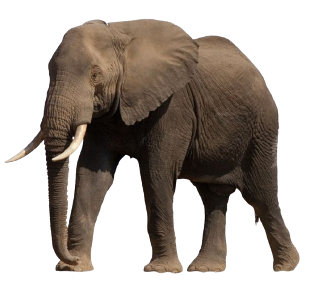

כל בני משפחת הפיליים הם בעלי חיים גדולים מאוד. משקלם הוא למעלה מ-5 טונות וגובהם למעלה מ-3 מטרים (9.8 רגל). פיל הסוואנה האפריקני הוא בעל החיים היבשתי הגדול ביותר שחי בימינו. גודלם הרב מעניק לפילים הגנה מפני כמעט כל הטורפים. הפיל הגדול ביותר שתועד היה פיל סוואנה אפריקני שניצוד באנגולה ב-1955, משקלו היה 12,274 קילוגרם (27,060 ליברות) והוא התנשא לגובה של 4.2 מטרים (14 רגל). המאפיין הבולט ביותר של הפיל הוא החדק, שהוא התארכות של האף והשפה העליונה. לחדק מספר שימושים: החדק משמש כאפו של הפיל - הפיל נושם דרך נחיריו המצויים בחדק (כמו בני האדם הוא מסוגל לנשום גם דרך פיו) וכן מריח דרכם. הפיל הוא שחיין מצוין, והוא יכול גם לשהות מתחת למים זמן רב בעת שהחדק משמש לו צינור העברה של אוויר, בדומה לשנורקל אצל צוללים אנושיים. החדק משמש גם כמעין זרוע עבור הפיל ובאמצעותו הוא יכול לאחוז בחפצים ולהרימם, לשאתם או לדחוף אותם. החדק מורכב משרירים רבים המאפשרים חוזק וכוח מחד, וגמישות ועדינות רבה מאידך. באמצעות חדקו יכול הפיל לברור ולהרים מן הקרקע גושי סוכר קטנים מתוך שכבה של חול ובאותה מידה הוא יכול להרים גזע עץ במשקל של עשרות קילוגרמים. הפיל משתמש בחדק גם כדי ללקט מזון. באמצעותו הוא מגיע אל ענפים גבוהים או שהוא אוסף בעזרתו את המזון מן הקרקע ואז מביא אותו אל פיו. בכך עושה הפיל בחדק שימוש הדומה ליד אוחזת. הפיל מסוגל להשמיע באמצעות החדק קולות הנשמעים למרחוק, כמעין חצוצרה. החדק חזק מאוד ומשמש "שוט" לסילוק תוקפים. הפיל יכול לשאוב מים באמצעות החדק ולהביאם אל פיו כדי לשתות או להתיזם על גופו כדי להצטנן מעט בימים חמים. כמו כן יכול הוא לאסוף עפר מן הקרקע ולפזר על גבו כדי ליצור כסות דקה שתשמש מגן מפני חרקים עוקצים או נושכים.
תוחלת החיים של הפיל ארוכה ביותר, ומתקרבת לזו של האדם. הפיל בטבע חי במשך 70 שנה בממוצע, ורק זוחלים דוגמת צבים ותנינים, ועופות כמו תוכים ונשרים מאריכים ימים יותר ממנו. אחת הפילות הזקנות ביותר בעולם בתנאי שביה נולדה בשנת 1951 וחיה בגן החיות בבזל שבשווייץ עד מותה בשנת 2010 בגיל 59. הפיל מגיע לשיא גודלו רק בשנות העשרים של חייו. בשנותיו הראשונות הוא צמוד לאמו, שמגוננת עליו מפני טורפים ומפני זעמם של פילים אחרים. לרוב נשארת הנקבה בעדר שבו נולדה, עד יום מותה. הזכר מורחק בעת הגיעו לגיל הבגרות. הפילים נעים בעדרים, שאותם מנהיגות נקבות בוגרות. הזכרים נודדים כיחידים או בצמדים, וישנן תקופות שבהן הם מתלווים לעדר הנקבות, בעיקר לשם רבייה. עדר הנקבות מורכב מקרובות משפחה וכולן תלויות בניסיון חייה של הפילה המבוגרת. זו תוביל אותן ביערות אסיה או בשבילי אפריקה אל מקורות המזון והמים. הפילים אינם טריטוריאליים מכיוון שבאזור בו ישהו תוך זמן קצר לא תישאר מספיק צמחייה ממנה יוכלו להיזון. לכן הם נודדים מרחקים עצומים, ובאפריקה אף על פני מחצית היבשת, מדרום אפריקה אל טנזניה דרך מוזמביק ולהפך. הפילים מצטיינים בזיכרון מעולה והם יכולים לדלות מזיכרונם פרטים קלושים כעבור שנים. פילה המנהיגה את העדר מסוגלת, למשל, להוביל את שאר הפילים אל עבר חוליות במדבריות נמיביה, ושם, כאשר תחפור לעומק של מטר או שניים, יתגלו לפתע מים, וכל זאת משום שזכרה שכשהייתה בגיל צעיר, כמה עשרות שנים לפני כן, הובילה אותה מנהיגת העדר דאז באותו נתיב (בורות המים האלה משמשים גם בעלי חיים אחרים ויש להם חשיבות עצומה באקלים הצחיח של אפריקה). מכאן נגזר הביטוי "זיכרון של פיל". לפיל יש שתי צורות הליכה, הליכה רגילה והליכה מהירה הנראית כריצה, אולם עקב גודלו הוא אינו יכול לדהור או לטפוף, ואף אינו יכול לקפוץ. אמנם הפיל אינו יכול לקפוץ, אך הוא כן מסוגל לעמוד על שתי רגליו, לשם אכילה, כצורת אילוף, או אזהרה. הפיל משתמש בחישה סייסמית של גלי תת-קול לשם ניווט, תקשורת ומציאת העדר.[2] בשל גודלם המאיים של הפילים, אין להם כמעט טורפים בטבע, מלבד להקות של אריות, שהתמחו בבידוד פיל צעיר או גור מסביבת אמו והעדר ובהריגתו, תוך שיתוף פעולה זהיר של פרטים רבים. הדרך בה האריות תוקפים גור פילים היא קפיצת להקת לביאות על גב אחד מהם עד שהמשקל מפיל את הפיל ואז הם חוסמים לו את האוויר על ידי נשיכת החדק, דבר הגורם למותו. אירועים כאלה מתרחשים בשעות הלילה, עת כושר הראייה של הפילים נעשה מוגבל, בעיקר יחסית לזה של האריות שראיית הלילה שלהם משופרת ביחס ליתר בעלי החיים. חיה נוספת התוקפת לעיתים פילים צעירים בודדים היא טיגריס בנגלי. תועדו גם תקיפות של פילים בידי תנינים.
הפיל נחשב לאחת החיות האינטליגנטיות בטבע.[3] ניתן ללמוד זאת מכמה ניסויים ותצפיות שנעשו במשך השנים: על פי מחקר גם הפיל שייך לקבוצה המצומצמת של חיות המזהות את עצמן במראה, כלומר בעלות תודעה עצמית. החיות האחרות בקבוצה הן שימפנזה, דולפין (במידה מסוימת) והאדם. הפיל יכול לפתור פעולות פשוטות של חיבור וחיסור.[4] הפילים מסוגלים להשתמש בענפים לצרכים שונים. הפילים הם יצורים חברתיים למדי, החיים בעדר ומקיימים אינטראקציות חברתיות. נמצא כי פילים יודעים לגלות אמפתיה, לעזור לפיל בצרה, לשמש כבייביסיטר, לפנות מכשול בפני פיל אחר ועוד. הפילים משתמשים בצלילים ייחודיים, מעין שם פרטי, לקריאה לפיל אחר. כאשר מצליחים להשמיע את ה"קול-שם", הפיל הנקרא מגיב בנהימה או מתקרב. יתרון השימוש בשם עוזר לפיתוח הקשרים החברתיים.[5][6] פילים ניחנים ביכולות זיכרון שונות, כגון: זיכרון לטווח ארוך (לדוגמה, זיהוי עמית לתא בגן החיות או זיהוי פילים אחרים בעדר), זיכרון והבנת התנהגות אנושית, זיכרון מקומות למרעה ומים. נראה כי במידה מסוימת הם מסוגלים להבין את משמעות המוות. כאשר אחד הפרטים בעדר נופח את נשמתו, שאר הפילים בעדר נשארים בסביבת הפגר במשך כמה ימים, ואינם נוטשים אותו אף לצורך השגת מזון. הם גם אינם מאפשרים לאוכלי נבלות למיניהם להתקרב אל הגווייה. מתצפיות שנעשו עולה גם שכאשר פילים עוברים ליד שלדים ושרידי עצמות פילים אחרים – לאו דווקא מאלה שהיו חברים בעדר – הם נעצרים ממהלכם, עומדים זמן מה ורק אז ממשיכים, משל היה זה טקס אבל פרטי משלהם. פילים אפריקאיים נוהגים לקבור את מתיהם, וקיימת השערה כי גם פילים אסיאתיים נוהגים כך.[7]